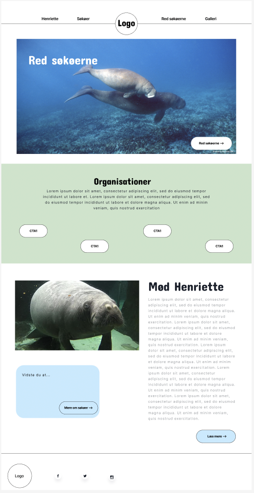

UX/UI
I Tema 3 har vi arbejdet med UX/UI, altså haft fokus på brugerforståelse. Vi har lært omkring udviklingsmetoder og modeller i erhvervet, metoder om brugerforståelse f.eks. usability og forståelse af praksisnære metoder til planlægning og produktion af indhold som f.eks. tekst eller billeder. Derudover har vi arbejdet med design- og udviklingsprocesser og løsninger til samarbejdspartnere, samt lært alt fra research og ideudvikling til brugertest som tænke-højt test, 5-second test og Lighthouse test.
Jeg har i dette tema lært rigtig meget om design inspirationssøgning, grafisk analyse, sketching og prototyping. Jeg har generelt lært at udvikle et site ud fra digitale prototyper og layout diagrammer. Udover det har jeg også lært hvad brugen af user stories gavner og hvordan jeg indsamler og analyserer data om brugere og brugssituationer.
Smugkig på min hjemmeside
Vi skulle som projekt i dette tema lave et website ud fra et valgfrit emne. Jeg valgte at lave et website om søkøer, da det er mit yndlingsdyr.
Hvis du kunne tænke dig at kigge lidt nærmere på min proces under dette projekt eller bare tjekke min hjemmeside ud, så kan du klikke herunder.